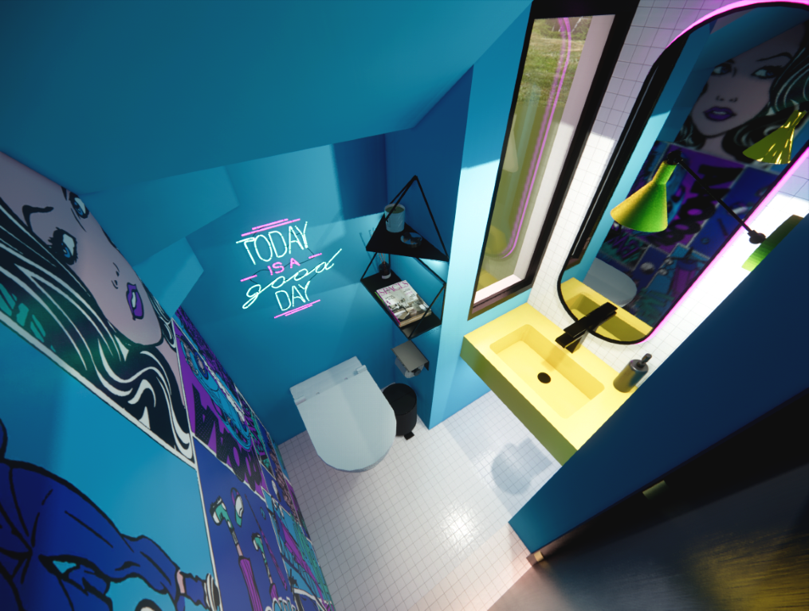
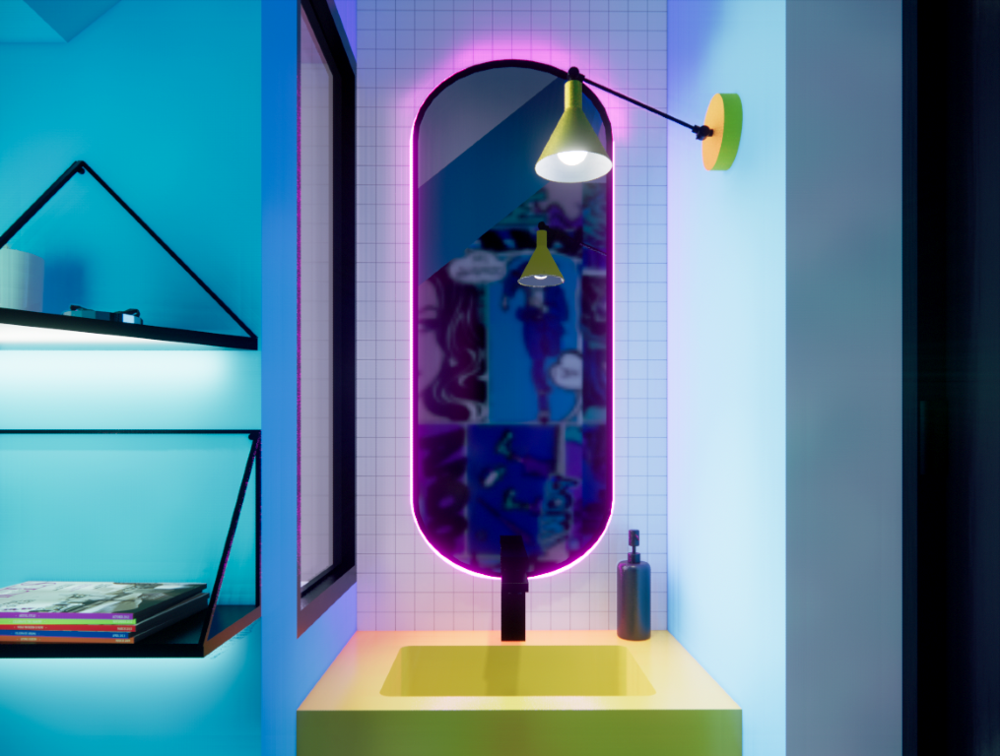
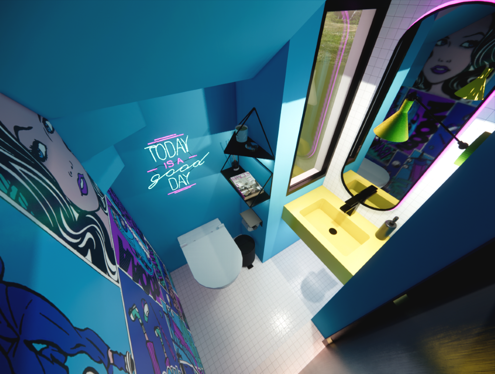
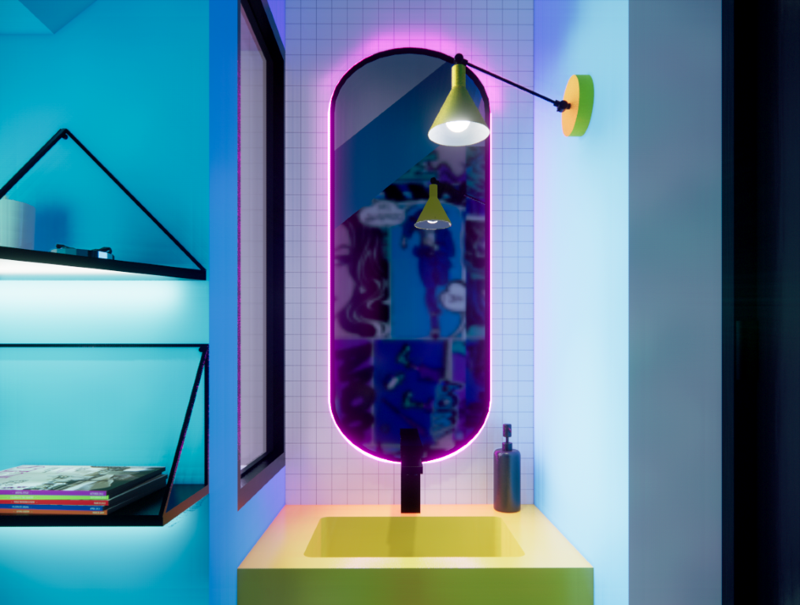
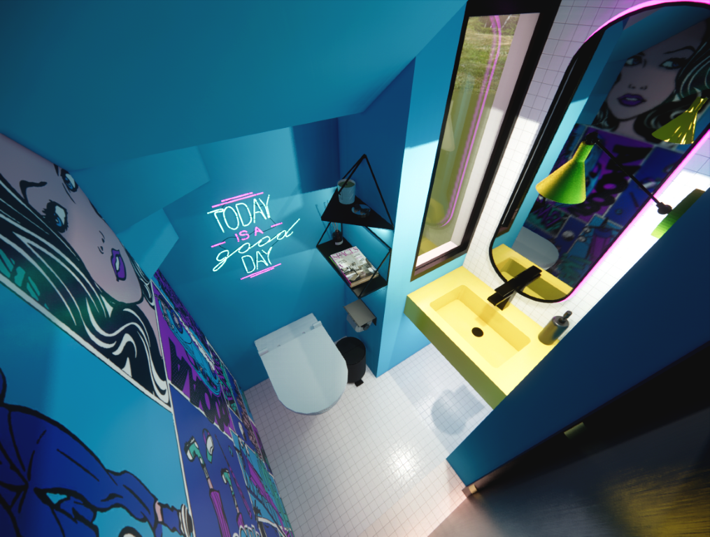
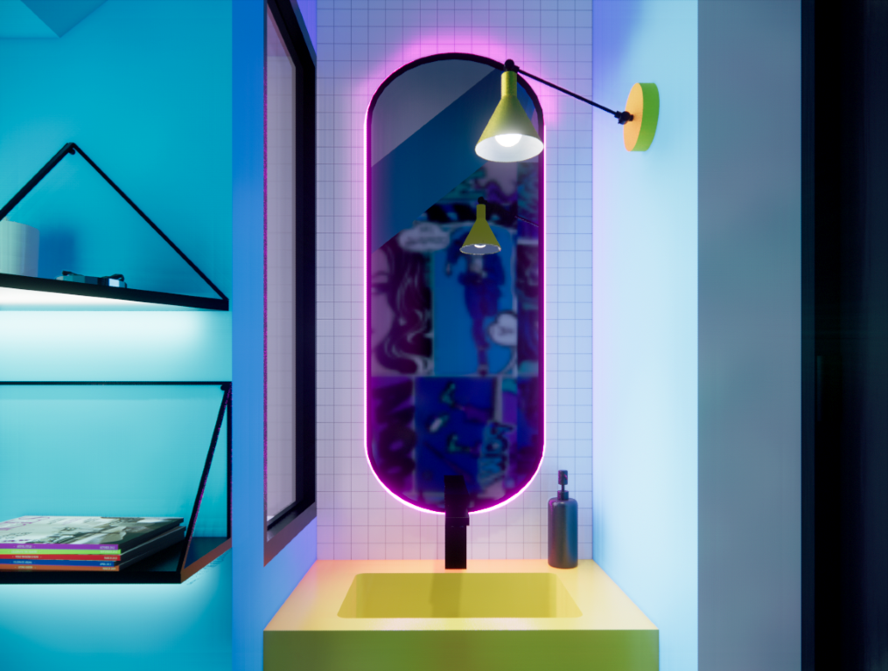

TOKIO
Renovation of a small restroom area with a concept inspired by the night streets of Tokyo. Custom wallpaper design, color palette based on the concept, and black elements reminiscent of comic-style linework.

 



Renovation of a small restroom area with a concept inspired by the night streets of Tokyo. Custom wallpaper design, color palette based on the concept, and black elements reminiscent of comic-style linework.

